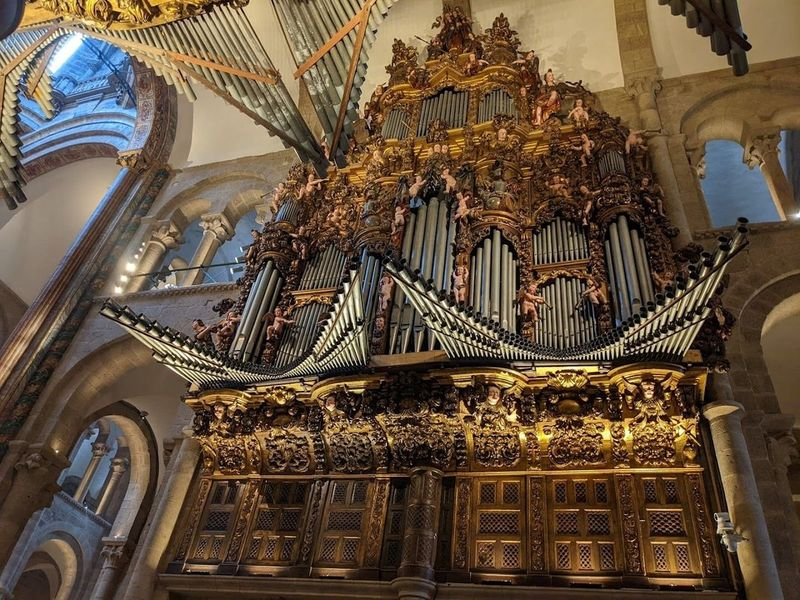
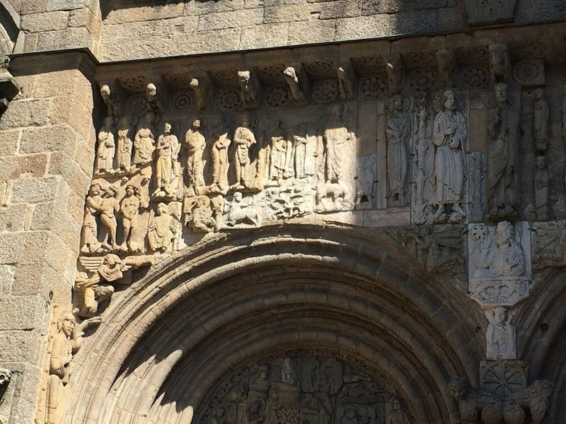
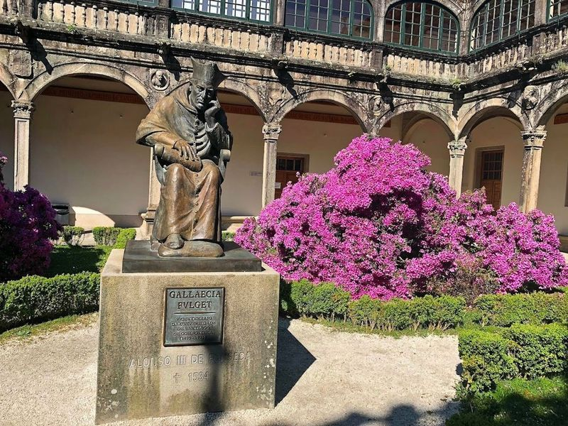
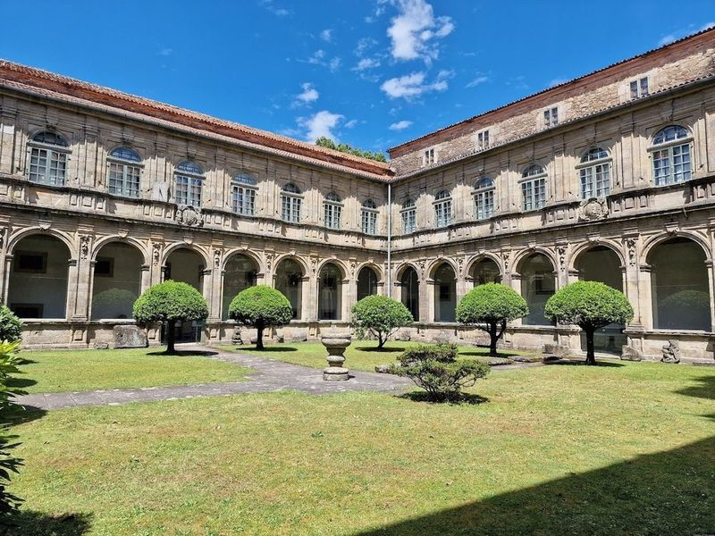
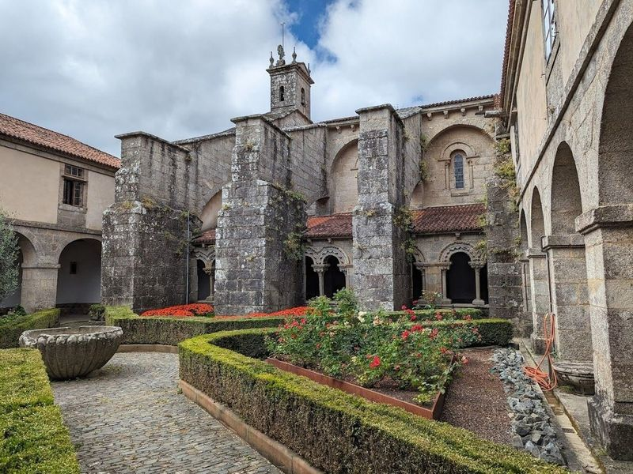
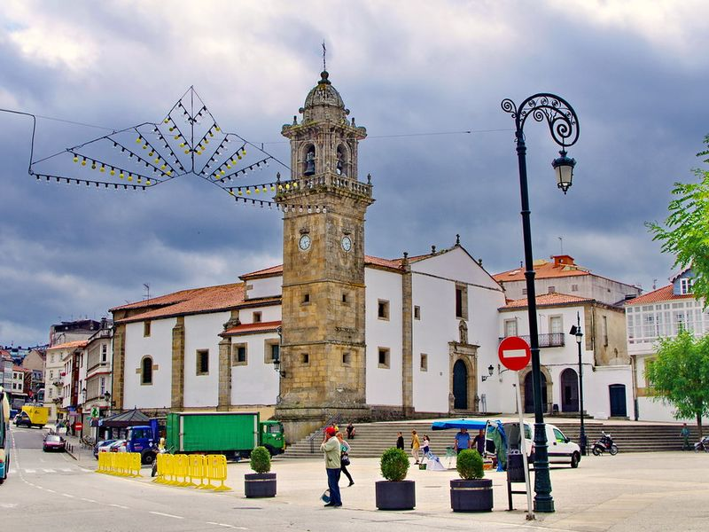
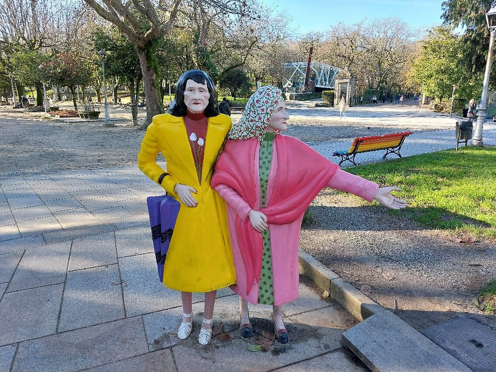
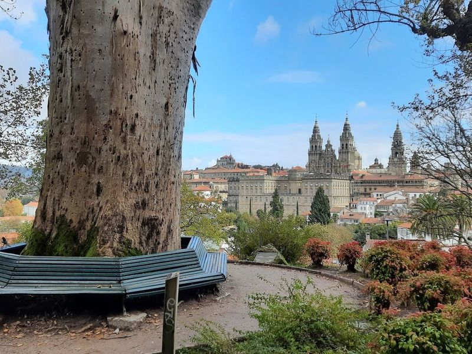
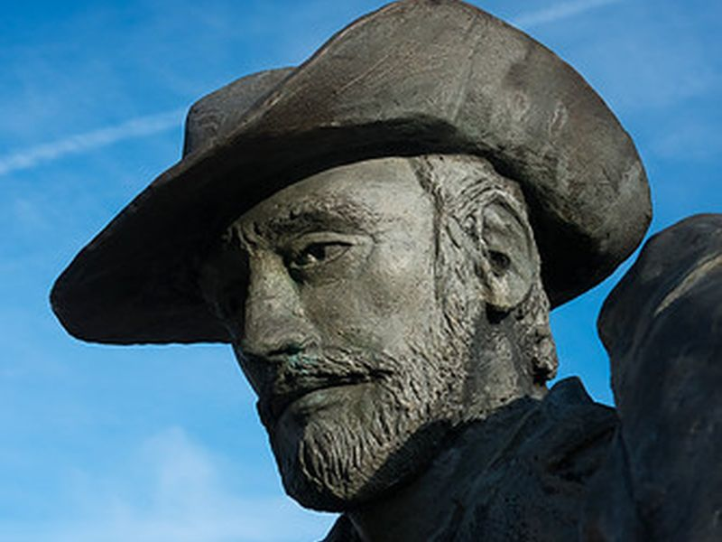
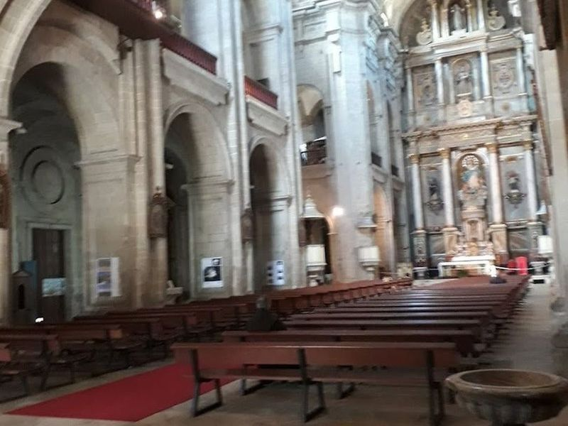

Explore Santiago de Compostela
A Brief History
Santiago de Compostela grew around the shrine of Saint James, whose relics drew pilgrims from the 9th century along routes crossing Christian Europe. The Romanesque cathedral with its Baroque façade remains the goal of the Camino de Santiago. Archbishopric power, university foundations, and regional government shaped granite plazas, monasteries, and civic buildings in Galicia's administrative capital.
Attractions Map
Top Sights & Activities

Cathedral of Santiago de Compostela
The Cathedral of Santiago de Compostela is a magnificent Romanesque structure and a renowned pilgrimage site, featuring the impressive carved arched portico by Master Mateo. The cathedral has undergone various extensions and incorporates elements of Renaissance, Baroque, and Neo-Classical styles. Its different facades showcase diverse architectural influences, from Baroque to Neoclassical.

Porch of the Glory
The "Porch of the Glory" is a significant feature of Santiago de Compostela Cathedral, located in Galicia, Spain. This Romanesque masterpiece greeted pilgrims upon their arrival and holds religious importance as it is believed to be the burial site of Saint James the Great. The cathedral also marks the end of the Camino de Santiago pilgrimage route. Visitors can explore its rich history and even gain optional entry to the Portico of Glory.

Palace of Fonseca
The Palace of Fonseca, also known as Pazo de Fonseca, is a historic building in Santiago. Originally the ancestral home of Archbishop Alonso de Fonseca, it was transformed into the University of Compostela in 1544. The Renaissance-style palace features a courtyard and a gothic chapel. Today, it serves as the General Library of the university and is open to visitors for free.

Museum of the Galician People
The Museo del Pueblo Gallego is a captivating museum dedicated to the history and culture of Galicia, housed within a 13th-century convent complex. For a small fee, visitors can explore this impressive ethnographic museum featuring artifacts dating back to prehistoric times. The museum offers interactive exhibits and performances that bring Galician traditions to life.

Colegiata de Santa María de Sar
The Colegiata de Santa María de Sar is a remarkable 12th-century Romanesque church located in the outskirts of the city, next to the river Sar. It features a facade tower, flying buttresses added in the 18th century, and unique composite pillars supporting rib arches for natural lighting. The church has three basilical structures divided by pillars and showcases a leaning interior columns phenomenon.

Praza de Galicia
Praza de Galicia lies beside Santiago's old town with views toward the cathedral towers and the Hostal dos Reis Católicos. Plane trees shade benches used by pilgrims arriving on the Camino. The square links the historic centre to modern administrative buildings along the Rúa do Vilar axis.

As Duas Marias
As Dúas Marías is a bronze statue in the Alameda park commemorating two local sisters known for their daily walks in traditional dress. The sculpture stands among paths lined with stone benches and pollarded trees. The monument has become a meeting point between the university quarter and the historic centre.

Parque da Alameda
Nestled in the heart of Santiago de Compostela, Parque da Alameda is a 16th-century park that serves as a serene escape from the bustling city. This elegant green space comprises three distinct areas: Paseo da Alameda, the Oak Grove of Santa Susana, and Paseo da Ferradura. While its origins date back centuries, many of its enchanting features—like ornate fountains, tranquil ponds, and vibrant flower gardens—were added in the 19th century.

Monumento al caminante
The Monumento al Caminante on the Alameda honours pilgrims who complete the Camino de Santiago. The bronze figure strides toward the cathedral spires visible above the rooftops. The work stands at a viewpoint where walkers traditionally first sight the city's towers.

Convento de San Francisco de Santiago
Convento de San Francisco de Santiago, originally a 13th-century monastery for Franciscan friars, has been transformed into a refined hotel and restaurant. The historic building is located near a Gothic cathedral and notable monuments. The former convent now offers excellent facilities, delicious food with a special Pilgrim menu featuring typical monastery dishes, and top-notch service.